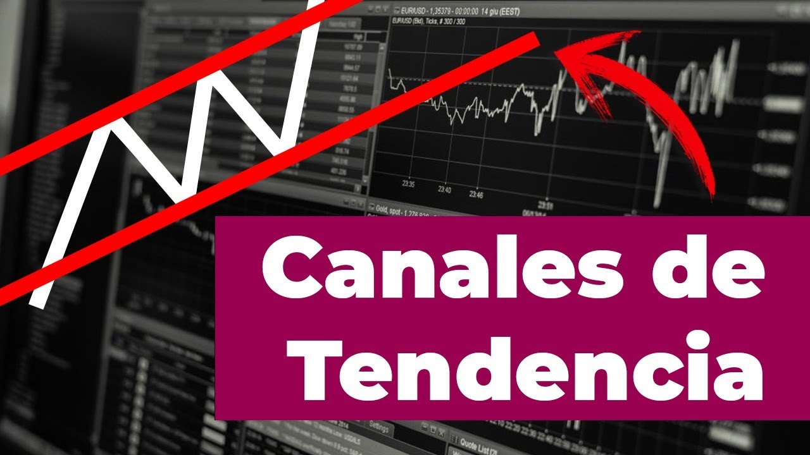

Trading con Canales
Antes de empezar con este tema de canales en el trading te invito que pases a ver la primer parte de estructura del mercado, es importante conocer ciertos conceptos del análisis técnico cómo lo serían las tendencias y los soportes y resistencias.
El Chartismo no es indispensable, pero es muy util. Nos permite encontrar más oportunidades para operar, delimitar ciertas áreas en el gráfico y evitar tomar operaciones cómo en los niveles objetivos que pueda tener una figura chartista.
El chartismo no hace más que delimitarnos con soportes y resistencias tanto dinámicos (Soportes y Resistencias tendenciales) cómo horizontales.
Esta delimitación nos permite tomar operativas apoyándonos con la estructura del mercado que se va creando.
Podemos encontrar figuras chartistas de continuidad cómo de reversión, en esta clase puedes obtener más información al respecto. Recuerda que esa clase es un pequeño resumen del chartismo, pero acá vamos a profundizar mucho más en las figuras.
Empezamos esta clase con los Canales, debemos de considerar que existen canales horizontales, canales bajistas y canales alcistas.
En la siguiente clase explico a detalle cómo identificar los canales y presento algunos ejemplos

Es mucho más fiable si el precio dentro del canal se mueve de un extremo hacia otro, cómo podemos observar, en este caso el precio se encuentra oscilando delimitado dentro de una resistencia dinámica/horizontal y dentro de un soporte dinámico/horizontal.